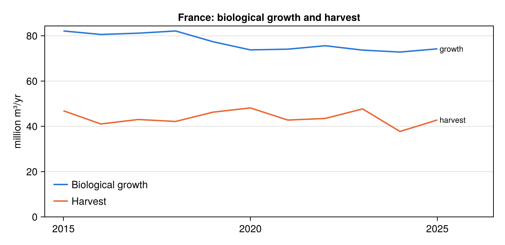
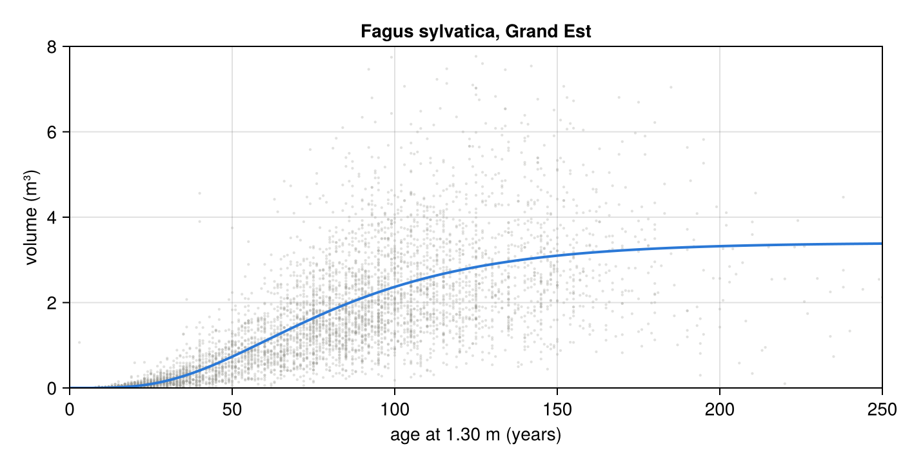

Example: the forests of Grand Est
This example walks through the whole workflow on the real French data: download, processing, a few analyses of the indicator table, a growth model and a PDF report.
The first run downloads about 210 MB (inventory, land cover and borders) and processes them, which takes a few minutes; afterwards everything is read from the cache.
using ForestDataExplorer
using DataFrames
using CairoMakieDownload and process the data
download_data fetches and caches the raw data; process_data turns them into a tidy table of indicators by year, administrative level, unit and species.
download_data(country="France")
df = process_data(country="France")
first(df, 5)| Row | year | level | country | region_code | region | department_code | department | specie | vol | ha | vol_ha | harvested_volumes | mortality_volumes | mortality_pc | biological_growth | share_bio_growth_harvested | n_plots |
|---|---|---|---|---|---|---|---|---|---|---|---|---|---|---|---|---|---|
| Int64 | String | String | String? | String? | String? | String? | String | Float64 | Float64 | Float64? | Float64? | Float64? | Float64? | Float64 | Float64? | Int64 | |
| 1 | 2005 | country | France | missing | missing | missing | missing | Abies alba | 1.46179e8 | 6.25e5 | 233.887 | missing | missing | missing | 5.23677e6 | missing | 466 |
| 2 | 2005 | country | France | missing | missing | missing | missing | Abies bornmuelleriana | 11430.2 | 138.433 | 82.5688 | missing | missing | missing | 1487.28 | missing | 1 |
| 3 | 2005 | country | France | missing | missing | missing | missing | Abies cephalonica | 10195.7 | 305.888 | 33.3316 | missing | missing | missing | 1583.78 | missing | 2 |
| 4 | 2005 | country | France | missing | missing | missing | missing | Abies grandis | 3.42053e6 | 17127.9 | 199.706 | missing | missing | missing | 2.63604e5 | missing | 22 |
| 5 | 2005 | country | France | missing | missing | missing | missing | Abies nordmanniana | 1.14995e5 | 630.005 | 182.529 | missing | missing | missing | 8079.74 | missing | 2 |
The table holds department rows plus their region and country aggregates:
combine(groupby(df, :level), nrow => :rows, :year => minimum => :first_year, :year => maximum => :last_year)| Row | level | rows | first_year | last_year |
|---|---|---|---|---|
| String | Int64 | Int64 | Int64 | |
| 1 | country | 2623 | 2005 | 2025 |
| 2 | region | 15388 | 2005 | 2025 |
| 3 | department | 60658 | 2005 | 2025 |
National trends
Ratios must never be summed: to get all-species values, sum the totals and recompute the ratios, which is what ForestDataExplorer.summarise does.
national = ForestDataExplorer.summarise(filter(r -> r.level == "country", df), [:year])
select(national, :year, :vol, :vol_ha, :biological_growth, :harvested_volumes, :mortality_pc,
:share_bio_growth_harvested)| Row | year | vol | vol_ha | biological_growth | harvested_volumes | mortality_pc | share_bio_growth_harvested |
|---|---|---|---|---|---|---|---|
| Int64 | Float64 | Float64 | Float64 | Float64? | Float64? | Float64? | |
| 1 | 2005 | 2.2047e9 | 157.059 | 7.1941e7 | missing | missing | missing |
| 2 | 2006 | 2.23039e9 | 158.923 | 7.09311e7 | missing | missing | missing |
| 3 | 2007 | 2.29843e9 | 163.737 | 6.96394e7 | missing | missing | missing |
| 4 | 2008 | 2.31439e9 | 164.901 | 7.12595e7 | missing | missing | missing |
| 5 | 2009 | 2.36092e9 | 168.217 | 7.65104e7 | missing | missing | missing |
| 6 | 2010 | 2.32279e9 | 165.472 | 7.74017e7 | missing | missing | missing |
| 7 | 2011 | 2.32951e9 | 165.978 | 7.85281e7 | missing | missing | missing |
| 8 | 2012 | 2.39432e9 | 170.632 | 7.88178e7 | missing | missing | missing |
| 9 | 2013 | 2.41052e9 | 171.718 | 7.89475e7 | missing | missing | missing |
| 10 | 2014 | 2.46238e9 | 175.442 | 8.3513e7 | missing | missing | missing |
| 11 | 2015 | 2.49521e9 | 177.785 | 8.21258e7 | 4.68756e7 | 0.370934 | 0.570779 |
| 12 | 2016 | 2.47018e9 | 176.001 | 8.05828e7 | 4.10487e7 | 0.369114 | 0.509398 |
| 13 | 2017 | 2.52267e9 | 179.741 | 8.11441e7 | 4.30212e7 | 0.402185 | 0.530182 |
| 14 | 2018 | 2.57955e9 | 183.805 | 8.21255e7 | 4.21554e7 | 0.442553 | 0.513304 |
| 15 | 2019 | 2.4024e9 | 171.172 | 7.73728e7 | 4.62636e7 | 0.560802 | 0.597931 |
| 16 | 2020 | 2.47327e9 | 176.258 | 7.37678e7 | 4.81356e7 | 0.665207 | 0.652528 |
| 17 | 2021 | 2.47208e9 | 176.107 | 7.40853e7 | 4.27706e7 | 0.741827 | 0.577315 |
| 18 | 2022 | 2.51035e9 | 178.83 | 7.56045e7 | 4.3478e7 | 0.823315 | 0.575071 |
| 19 | 2023 | 2.4873e9 | 177.188 | 7.36693e7 | 4.76944e7 | 0.913466 | 0.647412 |
| 20 | 2024 | 2.49639e9 | 177.869 | 7.2812e7 | 3.77304e7 | 0.918751 | 0.51819 |
| 21 | 2025 | 2.49983e9 | 178.114 | 7.42297e7 | 4.28344e7 | 0.934502 | 0.577052 |
Harvest and growth share the same unit, so they can share one axis:
flows = dropmissing(national, :harvested_volumes)
fig = Figure(size=(700, 340))
ax = Axis(fig[1, 1]; title="France: biological growth and harvest", ylabel="million m³/yr",
xgridvisible=false)
lines!(ax, flows.year, flows.biological_growth ./ 1e6; color="#2a78d6", linewidth=2, label="Biological growth")
lines!(ax, flows.year, flows.harvested_volumes ./ 1e6; color="#eb6834", linewidth=2, label="Harvest")
text!(ax, last(flows.year), last(flows.biological_growth) / 1e6; text=" growth", align=(:left, :center), fontsize=11)
text!(ax, last(flows.year), last(flows.harvested_volumes) / 1e6; text=" harvest", align=(:left, :center), fontsize=11)
ylims!(ax, 0, nothing)
xlims!(ax, first(flows.year) - 0.5, last(flows.year) + 1.5)
axislegend(ax; position=:lb, framevisible=false)
fig
Species of a region
The main species of Grand Est in 2023, with their growth and harvest rates:
ge = filter(r -> r.level == "region" && r.region == "Grand Est" && r.year == 2023, df)
ge = sort(ge, :vol; rev=true)
select(first(ge, 10), :specie, :vol, :ha, :vol_ha, :biological_growth, :harvested_volumes,
:mortality_pc, :share_bio_growth_harvested)| Row | specie | vol | ha | vol_ha | biological_growth | harvested_volumes | mortality_pc | share_bio_growth_harvested |
|---|---|---|---|---|---|---|---|---|
| String | Float64 | Float64 | Float64? | Float64 | Float64? | Float64? | Float64? | |
| 1 | Fagus sylvatica | 6.88053e7 | 2.99673e5 | 229.601 | 1.72887e6 | 1.45222e6 | 0.425144 | 0.839983 |
| 2 | Quercus petraea subsp. petraea | 6.16759e7 | 2.55721e5 | 241.184 | 1.23076e6 | 4.19248e5 | 0.278799 | 0.340641 |
| 3 | Abies alba | 4.81946e7 | 1.58727e5 | 303.632 | 1.30452e6 | 6.43296e5 | 0.815434 | 0.493128 |
| 4 | Quercus robur var. robur | 3.70485e7 | 1.68424e5 | 219.972 | 6.31053e5 | 2.01519e5 | 0.39029 | 0.319338 |
| 5 | Picea abies subsp. abies | 3.48182e7 | 1.24166e5 | 280.416 | 9.53084e5 | 3.47069e6 | 1.91179 | 3.64154 |
| 6 | Carpinus betulus | 3.14753e7 | 2.09537e5 | 150.213 | 1.03274e6 | 445209.0 | 0.825191 | 0.431095 |
| 7 | Pseudotsuga menziesii | 2.032e7 | 64835.7 | 313.408 | 8.49651e5 | 2.14856e5 | 0.394671 | 0.252876 |
| 8 | Pinus sylvestris | 1.6888e7 | 70845.9 | 238.376 | 3.83639e5 | 1.1177e5 | 0.461973 | 0.291342 |
| 9 | Fraxinus excelsior | 1.59134e7 | 72134.1 | 220.609 | 3.43185e5 | 1.36556e6 | 3.83006 | 3.97908 |
| 10 | Acer pseudoplatanus | 1.10671e7 | 61925.8 | 178.715 | 4.12927e5 | 85042.2 | 0.122714 | 0.20595 |
Single-year estimates of small units are noisy. Pooling five campaigns, as the official IGN statistics do, smooths them:
df5 = process_data(country="France", window=5)
spruce = filter(r -> r.level == "region" && r.region == "Grand Est" && r.specie == "Picea abies subsp. abies", df5)
select(spruce, :year, :vol, :harvested_volumes, :mortality_pc)| Row | year | vol | harvested_volumes | mortality_pc |
|---|---|---|---|---|
| Int64 | Float64 | Float64? | Float64? | |
| 1 | 2005 | 4.52578e7 | missing | missing |
| 2 | 2006 | 4.29096e7 | missing | missing |
| 3 | 2007 | 4.24128e7 | missing | missing |
| 4 | 2008 | 4.18553e7 | missing | missing |
| 5 | 2009 | 4.28102e7 | missing | missing |
| 6 | 2010 | 4.25121e7 | missing | missing |
| 7 | 2011 | 4.10437e7 | missing | missing |
| 8 | 2012 | 4.04542e7 | missing | missing |
| 9 | 2013 | 4.37696e7 | missing | missing |
| 10 | 2014 | 4.32912e7 | missing | missing |
| 11 | 2015 | 4.33888e7 | 9.99576e5 | 0.495428 |
| 12 | 2016 | 4.44961e7 | 1.20078e6 | 0.277973 |
| 13 | 2017 | 4.57325e7 | 1.28677e6 | 0.428372 |
| 14 | 2018 | 4.41012e7 | 1.20931e6 | 0.463636 |
| 15 | 2019 | 4.18063e7 | 1.291e6 | 0.495209 |
| 16 | 2020 | 4.01066e7 | 1.51556e6 | 0.74502 |
| 17 | 2021 | 3.83205e7 | 1.55374e6 | 1.04029 |
| 18 | 2022 | 3.56152e7 | 1.77216e6 | 1.22047 |
| 19 | 2023 | 3.26665e7 | 2.30029e6 | 1.6255 |
| 20 | 2024 | 3.17094e7 | 2.28821e6 | 1.83041 |
| 21 | 2025 | 3.12161e7 | 2.31061e6 | 1.72715 |
Growth model
A Chapman-Richards curve of tree volume on age, for beech in Grand Est:
m = estimate_growth(country="France", subregion="Grand Est", specie="Fagus sylvatica")Chapman-Richards growth model: volume [m³] = a·(1 - exp(-b·age))^c
species: Fagus sylvatica
area: Grand Est (France)
a = 3.403 (± 0.074), b = 0.02657 (± 0.0016), c = 4.99 (± 0.49)
n = 5206, RMSE = 1.042, R² = 0.502, MAI culmination ≈ 100 yearsThe model is callable and provides increments:
(volume_at_100=m(100), cai_at_100=current_increment(m, 100), mai_culmination=culmination_age(m))(volume_at_100 = 2.367241596707953, cai_at_100 = 0.023685263159671024, mai_culmination = 100.0)fig = Figure(size=(700, 360))
ax = Axis(fig[1, 1]; title="Fagus sylvatica, Grand Est", xlabel="age at 1.30 m (years)", ylabel="volume (m³)")
scatter!(ax, m.ages, m.values; color=("#9b9a95", 0.3), markersize=3)
lines!(ax, 0:250, m(0:250); color="#2a78d6", linewidth=2)
xlims!(ax, 0, 250)
ylims!(ax, 0, 8)
fig
Species names are matched leniently: a binomial selects all its subspecies.
estimate_growth(country="France", specie="Pinus nigra").taxa4-element Vector{String}:
"Pinus nigra subsp. nigra"
"Pinus nigra subsp. salzmannii"
"Pinus nigra var. calabrica"
"Pinus nigra var. corsicana"Report
Finally, a multi-page PDF report for the region:
create_report(country="France", subregion="Grand Est", year=2023, filename="report_grand_est_2023.pdf")"report_grand_est_2023.pdf"The generated report: report_grand_est_2023.pdf.
This page was generated using Literate.jl.